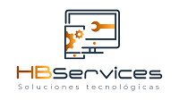

CotizarImplementación de laboratorios, soporte experto y arriendo de equipamiento para instituciones educacionales y empresas.
Cotizar por WhatsAppAtención de garantías y servicio técnico onsite y carry in para Dell, Asus, HP y Lenovo.
Atención de calidad, con servicios eficientes y rápidos.
Equipos informáticos para particulares y empresas, con garantía.
Desde 2020 entregan soluciones tecnológicas para el mundo de la educación y las empresas privadas.
Se especializan en laboratorios computacionales, salas interactivas y espacios tecnológicos recreativos, con asistencia técnica y actualización de hardware y software.